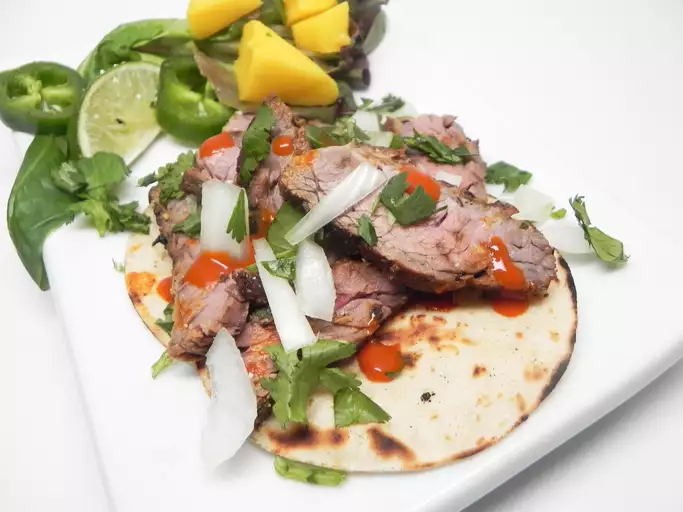

Home
Authentic Baja-Mexican Street Tacos (Carne Asada)

Description
On weekend getaways from San Diego to the beaches in Ensenada and Rosarito
(Baja California), I found my favorite meal in the delicious soft skirt
steak tacos sold by the taqueria street vendors. This recipe tastes exactly
how I remember them - without having to make the trip across the border.
Muy bueno! Top with some freshly squeezed lime juice and spicy salsa if you like.
Ingredients
- 3 cups fresh orange juice, or more as needed
- 2 tablespoons finely chopped fresh cilantro
- 2 tablespoons freshly squeezed lime juice
- 1 teaspoon minced garlic
- 1 teaspoon salt
- 1 teaspoon ground black pepper
- 1 teaspoon ground cumin
- 1 pinch cayenne pepper
- 3 pounds trimmed skirt steaks
- 16 (6 inch) white corn tortillas, or as needed
- 1 white onion, chopped, or to taste
- 1 small bunch fresh cilantro, chopped, or to taste
Directions
-
Combine orange juice, 2 tablespoons cilantro, lime juice, garlic, salt,
pepper, cumin, and cayenne in a large freezer bag. Submerge skirt steaks
in the marinade. Seal the bag, squeezing out as much air as possible.
Refrigerate, 1 to 8 hours.
-
Preheat a grill to medium-high. Grill the steaks until hot and firm in
the center or to your preferred doneness, 6 to 8 minutes per side.
Transfer steaks to a flat work surface and slice as thinly as possible
against the grain.
-
Heat corn tortillas on the grill or in a microwave. Keep tortillas warm
in a folded sheet of aluminum foil covered by a thick towel.
-
Add steak to each tortilla and top with white onion and cilantro.